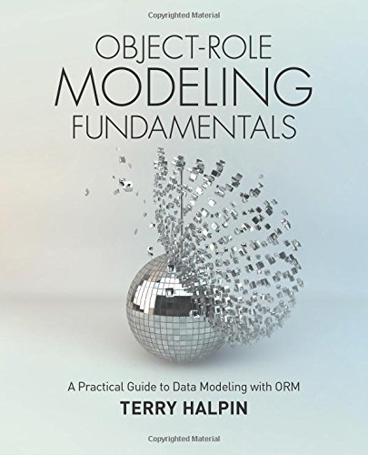

This text is available now at Amazon.com:
Object-Role Modeling Fundamentals

This text is available now at Amazon.com:
Information Modeling and Relational Databases
The following are links to sites that provide more information on Object Role Modeling:
| Site | Link |
|
Object Role Modeling |
http://www.orm.net/ |
|
The ORM Foundation |
http://www.ormfoundation.org/ |
| Wikipedia article on Object Role Modeling | http://en.wikipedia.org/wiki/Object-role_modeling |
Text Books
|  | Object-Role Modeling Fundamentals: A
Practical Guide to Data Modeling with ORM This text is available now at Amazon.com: Object-Role Modeling Fundamentals |
|
Information
Modeling and Relational
Databases, Second Edition (The Morgan Kaufmann Series in Data
Management Systems) This text is available now at Amazon.com: Information Modeling and Relational Databases |